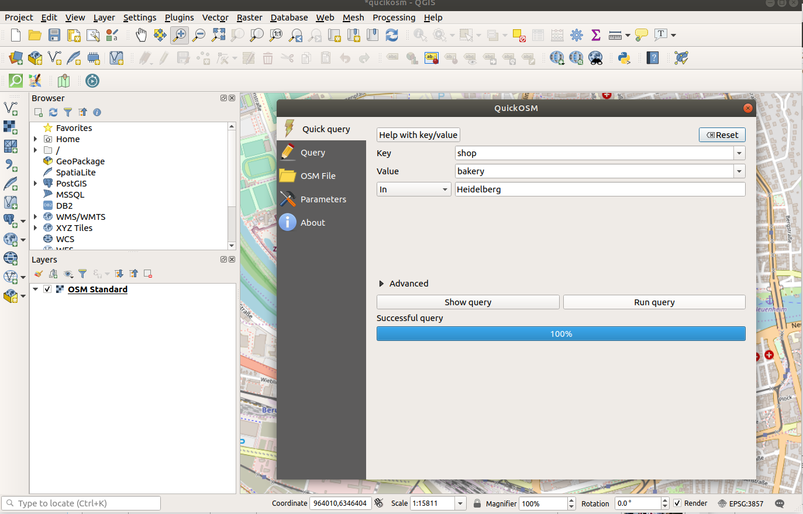

How to use OpenStreetMap data with the Desktop GIS QGIS
Get to know the great combination of OSM data and QGIS
Astrid Emde (OSGeo & WhereGroup Bonn)
most used Open Source Desktop GIS
OSGeo Project
I love

I am lucky
because at
we work a lot with


 & ...
& ...


& QGIS HelpDesk & FOSS Academy
What is QGIS?
- started in Alaska in 2002 as viewer for PostgreSQL data
by Gary Sherman
- Desktop GIS
with lot of functionality
- Great Community
Passionate members from around the world
- QGIS is fun
and business

Andreas Neumann (QGIS PSC) at FOSS4G 2019
Link to FOSS4G 2019 presentation and presentation video
QGIS Versions
QGIS Community
QGIS Sprint before FOSS4G 2019 Bucharest (Romania)
QGIS Desktop GIS
- load all sorts of data
- vector data
- raster data
- services
QGIS what can I do with it?
- view
- create
- process
- routing
- QGIS Server - create services
- QField - use your data mobile & collect new data
- ... and much more
QGIS and OSM
- Easy to visualize & work with OSM data with QGIS
- Plugins around QGIS
Load your OSM data into QGIS
download .pbf or ESRI Shape file
Load your OSM data into QGIS
change from one data model to the other
from OSM: nodes, way, relations, tags
to GIS: points, lines, areas, attributes
Load your OSM data into QGIS
powerful GDAL/OGR library is integrated in QGIS

- drag & drop your data to your QGIS project
- choose the geometry type you need
- temporay layer is created
- transfer data to geopackage or into a PostgreSQL database via DB Manager
- style your data

QGIS Plugins
over 500 plugins including experimental
Explore and make your choice
QuickMapServices
choose your favorit from several services and search for datasets and basemaps
f.e OSM Standard, OSM Topology, OSM Hiking map
Plugin QuickOSM
download OSM data thanks to the Overpass API
- choose the tags you are interested in and a region
- or create complex queries

Plugin OSMDownloader
easy dowload data for a given area
Plugin Nominatim Locator Filter
Use the Geocoder Nominatim to search for locations
- go to the search field
- type osm -> followed by separator. Search for the location you are interesed in f.e. Im Neuenheimer Feld 252

Plugin OSM place search
Uses the Geocoder Nominatim too
- find data
- set filter via configuration
- load the result, also possible as mask
- reverse geocoding for your actual position
Plugin ORS Tools for Routing
Functions of openrouteservice.org based on OpenStreetMap
- routing interactive in the map
- calculation isochrones and matrix calculations
- processing framework can handle point files
- output with attributes including duration, length and start/end locations
Plugin Animate OSM
Visialize the buildings mapped in a time frame
f.e HOT team defines tasks
Plugin Animate OSM
- download data for a time period
- create images
- create video
Plugin Animate OSM
credits to Raymond Nijssen
- usefull for HOT and Missing Maps
3D
Online terrain, buildings, image export (from 3.8)


Find a lot of information at qgis.org
documentation, tutorial, visual change log ...
try OSGeoLive which contains QGIS, QGIS Server and more Open Source Software for Geospatial
iD Editor, JOSM, Mapnik & contains data and documenation

Books
you find many great QGIS books and tutorials

QGIS Map Design Anita Graser and Gretchen N. Peterson LocatePress, 2018
Discover QGIS 3.x Kurt Menke LocatePress, 2019
Blogs & Tweets
many many blogs & tweets about QGIS
- Anita Graser (@underdark) https://anitagraser.com/
- NorthRoad Advent calendar https://north-road.com/blog/
Videos
a lot of QGIS videos from conferences
- TIB AV-Portal search QGIS > 400 hits 09/2019
- media.ccc.de https://media.ccc.de/search/?q=qgis
OSM Wiki about QGIS
Get started with the informations from the OSM Wiki